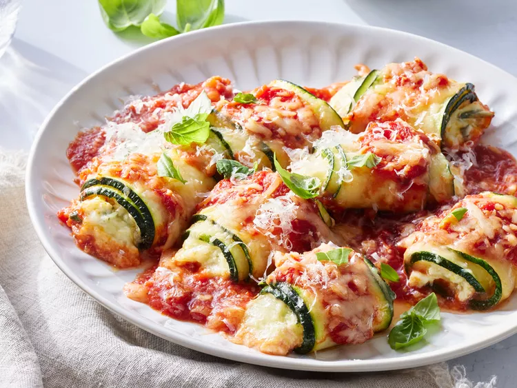

Zucchini Rollatini

Description
Zucchini ribbons filled with ricotta, mozzarella, and herbs, baked in marinara sauce — like lasagna roll-ups without the pasta.
Ingredients
- 2 zucchinis, sliced lengthwise
- 2 tbsp olive oil
- 1 cup ricotta cheese
- 1 egg
- Fresh basil & oregano
- Lemon zest
- 1½ cups mozzarella
- ½ cup Parmesan
- 2 cups marinara sauce
Steps
- Preheat oven to 425°F. Bake zucchini slices until tender.
- Mix ricotta, egg, herbs, lemon zest, and cheeses.
- Spread marinara in baking dish.
- Fill and roll zucchini slices, placing seam-side down.
- Top with sauce and cheese.
- Bake at 375°F for 25 minutes until bubbly.